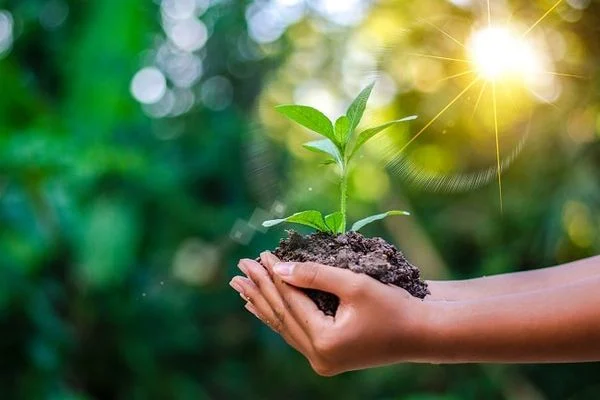
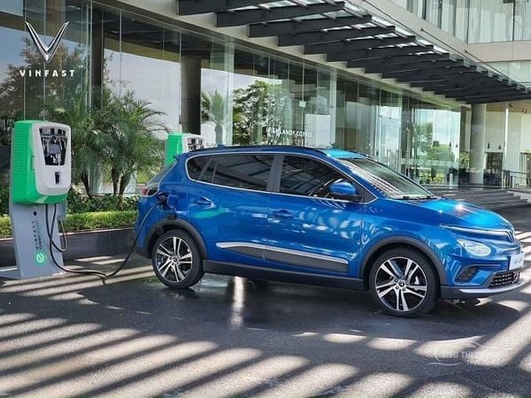
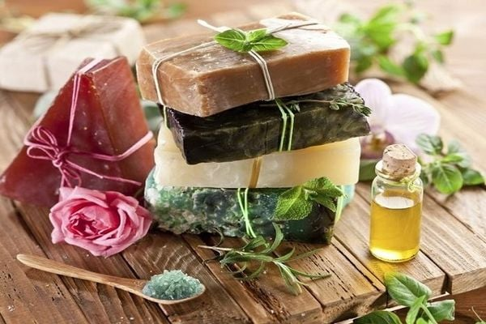
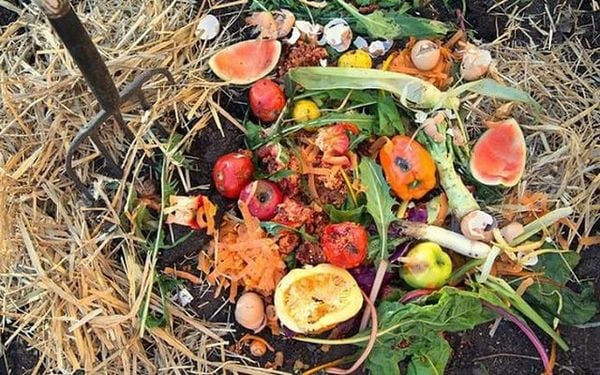
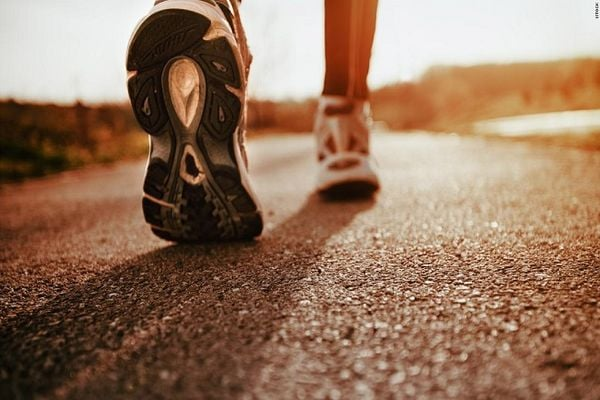
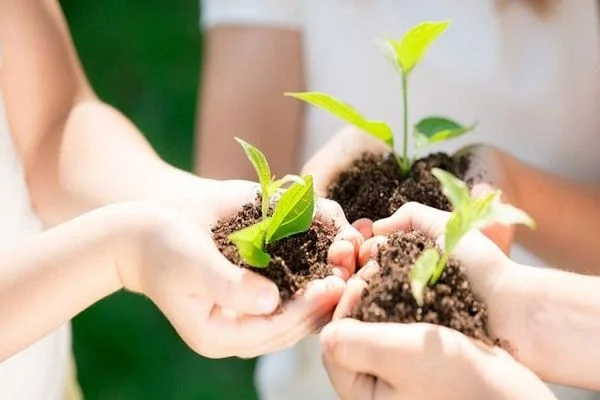
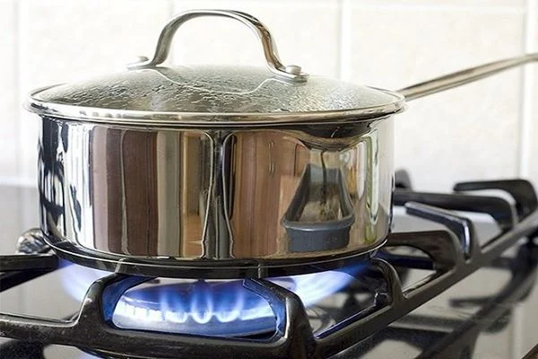

“Sống Xanh” Có Khó Như Nhiều Người Nghĩ?
Thiên nhiên đang “quằn quại” với những “nỗi đau” do con
người gây ra. Và mẹ
tự nhiên cũng đã răn đe nhân loại bằng những “lằn roi” chưa bao giờ kinh hoàng đến thế. Trái Đất
đang báo động về sự ô nhiễm trầm trọng và sự cạn kiệt của các nguồn tài nguyên. Vài thế kỷ tới, nếu
tình hình không có gì cải thiện. Có lẽ, con cháu chúng ta sẽ không còn ngôi nhà xanh để sống sót
nữa.
Vậy bạn có thể làm gì để góp một chút sức lực bé nhỏ nhưng hiệu quả lớn lao cho hành tinh này? Hãy sống
xanh – an lành – khỏe mạnh bằng chính những thay đổi nhỏ nhất trong cuộc sống mỗi ngày. Sống xanh không
hề khó như nhiều người vẫn nghĩ. Cùng TDT Blog sống xanh từ hôm nay bạn
nhé!.

Sống xanh là gì?
Sống xanh là lối sống lành mạnh, sống bền vững, giảm thiểu sử dụng tài nguyên thiên nhiên. Lối sống này
hướng đến đáp ứng nhu cầu hiện tại nhưng không làm suy kiệt tài nguyên cho các thế hệ tiếp theo. Sống
xanh đang trở thành một xu hướng tất yếu của tương lai, không chỉ là trách nhiệm mà còn là đặc ân với
bất kỳ ai trên hành tinh này.
Mục tiêu của cách sống này nhằm giảm thiểu ô nhiễm môi trường, giảm tác hại của khí thải nhà kính. Tránh
lãng phí bất kể nguồn tài nguyên nào từ thực phẩm, vật dụng, cách thức di chuyển… Sống xanh là một sự
cam kết của cá nhân với môi trường chung của Trái Đất.

Nhắc đến cách sống lành mạnh nhiều người nghĩ nó xa vời, cao siêu và không phù hợp với họ. Nhưng
thực ra
sống xanh đơn giản hơn bạn nghĩ hàng chục lần và bạn có thể thực hiện nó ngay khi đọc được dòng chữ
này.
Thật đấy! Chỉ cần bạn giảm độ sáng của màn hình điện thoại/laptop xuống một chút. Bạn đã góp phần
tiết
kiệm một lượng điện năng không nhỏ rồi. Hoặc bạn để chế độ tiết kiệm năng lượng cho thiết bị của bạn
cũng đã là hữu ích với môi trường này rồi.
Sống xanh là hướng đi tất yếu khi con người còn muốn cứu rỗi lấy chính mình trong hôm nay!
“Sống xanh” có khó như nhiều người nghĩ?
Sống xanh không phải điều gì phức tạp hay khó khăn. Chỉ cần một hành động nhỏ mỗi ngày, bạn đã có thể
sống lành mạnh, khỏe mạnh, năng động, thân thiện hơn với môi trường.
Bạn có thể tái sử dụng các loại chai nhựa, đồ hộp hoặc đưa chúng vào các chương trình tái chế. Trước khi
vứt bỏ một món đồ vào thùng rác, hãy xem xét lại có thể tặng/cho ai đó hay không. Bạn hoàn toàn có thể
đưa chúng đến nơi thu gom đồ từ thiện hoặc cơ sở của hội chữ thập đỏ.
Cuối cùng, nếu buộc phải vứt đồ đi, hãy xem xét một lần nữa, bạn có thể dùng cái lon cũ, chai nhựa hay
đôi boot cũ của bạn để trồng hoa hay không. Biến những đồ phế thải thành vật dụng trang trí trong nhà,
ngoài vườn. Làm đồ thủ công handmade từ đồ cũ cũng là một cách sống bền vững.

Đối với những rác thải rắn, bạn thu gom lại, tái chế nó, tái sử dụng (kéo dài vòng đời). Không chỉ góp
phần bảo vệ môi trường vì hạn chế rác thải. Mà còn là tiết kiệm nguồn tài nguyên thiên nhiên vì không
cần mua đồ mới. Về mặt vĩ mô, nhiều người hành động như vậy sẽ giảm tiêu hao nguồn năng lượng và tài
nguyên cho Trái Đất. Đó là một hành động cực kỳ ý nghĩa với hệ sinh thái.
Đối với chất thải hữu cơ, bạn có thể ủ chúng để tạo thành phân bón, tiếp tục bồi bổ cho mảnh đất sau
vườn. Đồng thời giảm đi rất nhiều những khí thải do rác thải hữu cơ gây ra.
Cứ như vậy, bắt đầu bằng những hành động nhỏ nhất ngay bây giờ. Mỗi người chúng ta sẽ sống xanh hơn mỗi
ngày. Nhiều người chung tay sẽ làm cho môi trường sống thay đổi tích cực.

Sống xanh từ những điều nhỏ nhất!
Một chút thay đổi nhỏ từ suy nghĩ đến hành động của bạn. Cũng có thể làm nên những thay đổi lớn lao đối
với hệ sinh thái. Sống xanh không khó như bạn nghĩ nếu bắt đầu hơn từ hôm nay bằng những điều nho nhỏ
dưới dây:
- Tiết kiệm nước hết mức có thể
Mặc dù 3/4 diện tích bề mặt Trái Đất là nước nhưng chỉ có vài phần trăm rất nhỏ trong đó là nước
có thể uống được. Ở châu Phi, các em bé thậm chí phải uống nước trực tiếp từ một vũng bùn. Mà
như vậy đôi khi đã là lại may mắn.
Chúng ta có thể Tiết kiệm nước – nguồn tài nguyên sống còn của nhân loại. Bằng những hành
động
thiết thực ngay tại ngôi nhà của mình:
- Tắt nước khi không sử dụng. Nếu đang đánh răng thì đừng để vòi nước chảy không.
- Một ống nước bị rò rỉ có thể lãng phí đến 200 gallon nước mỗi ngày. Vậy nên, hãy sửa nó ngay
đi.
- Uống nước đun sôi thay vì nước đóng chai hoặc nước khoáng.
- Nên giặt đồ bằng nước lạnh nhiều nhất có thể để đỡ tốn thêm nguồn nước bốc hơi khi đun nấu
- Đi bộ, đi xe đạp hoặc phương tiện công cộng nhiều nhất có thể
Nếu bạn ở gần trường học hoặc cơ quan, nếu bạn phải di chuyển dưới 5km. Vậy thì hãy đi bộ hoặc đi
xe đạp để tiết kiệm nhiên liệu, giảm khí thải phương tiện giao thông. Và cũng tiết kiệm tiền cho
chính bạn.
Nếu bạn phải đi làm xa nhà thì có thể cân nhắc đi xe bus công cộng. Vừa đảm bảo an toàn, đỡ ùn
tắc giao thông, giảm khí thải ra môi trường.

Nếu bạn đi xe cá nhân, hãy lái xe an toàn, đi với tốc độ vừa phải. Khi dừng đèn đỏ trên 25s thì
hãy tắt máy để đỡ xả khí thải ra môi trường.
-
Tiết kiệm điện hết mức có thể:
- Tắt đèn khi ra khỏi phòng
-
Rút phích cắm, tắt các thiết bị điện khi không sử dụng
- Dùng máy lạnh tiết kiệm điện, thường xuyên vệ sinh bộ lọc máy lạnh, để chế độ tiết kiệm điện
khi ngủ,…
- Sử dụng bóng đèn compact tiết kiệm điện và bền gấp nhiều lần bóng đèn sợi tóc
-
Trồng nhiều cây xanh trong không gian sống
Trồng thêm một chậu cây nhỏ trong vườn của bạn, giúp không khí trong lành hơn. Bạn có thể ngắm
chậu cây xinh đẹp, thư thái hơn và còn góp phần tăng khí oxy cho không gian sống. Nếu có thể bạn
hãy tạo ra

-
Chọn thực phẩm thông minh
Bạn có thể sống xanh ngay trong cách chọn lựa thực phẩm mỗi ngày. Ví dụ như bạn ăn thịt 2 – 3
lần/tuần. Nếu bạn ăn cá hãy chọn cá có nguồn đánh bắt an toàn. Ăn thực phẩm địa phương, thực
phẩm theo mùa. Hay không mua những thực phẩm bọc bao bì nhựa không cần thiết. Đó cũng đã góp
phần bảo vệ môi trường rồi.
Chỉ nấu đủ số lượng đồ ăn cho mọi người trong nhà, tránh lãng phí lương thực thực phẩm cũng là
một cách sống xanh mà bạn dễ dàng thực hiện.

Ngoài ra, khi nấu ăn bạn cũng có thể góp phần tiết kiệm tài nguyên bằng cách:
- Chọn những đồ dùng nấu nướng có nguồn gốc thực vật thay vì nhựa.
- Chọn nồi chảo chất lượng để nấu nhanh hơn, tiết kiệm năng lượng hơn.
- Đậy kỹ nắp nồi khi nấu nướng để đồ ăn nhanh chín hơn, tiết kiệm năng lượng hơn.
- Tắt bếp từ, rút phích cắm hoặc vặn kỹ bình gas khi đã nấu ăn xong.